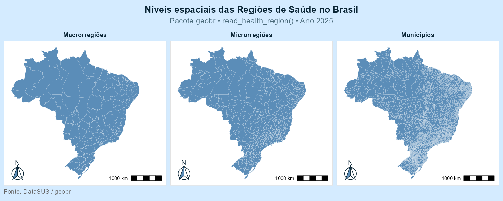
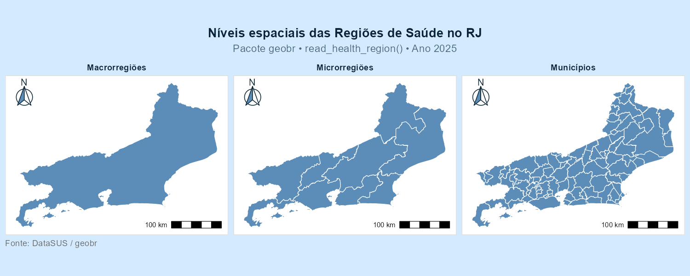
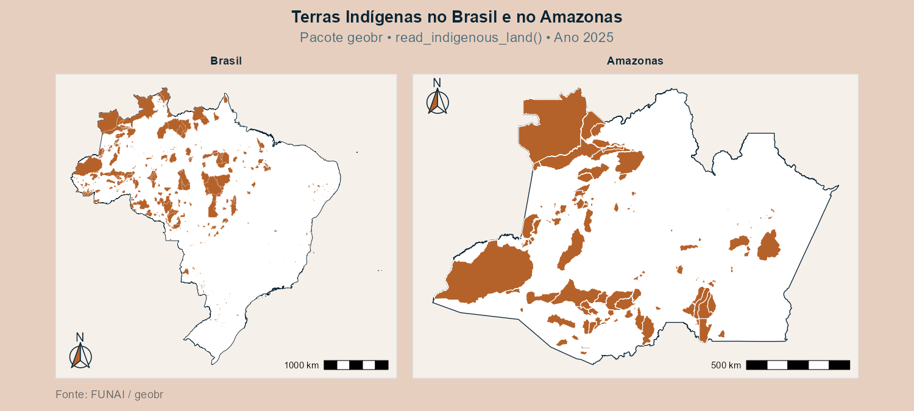

ATIVIDADE AVALIATIVA 9
Universidade Federal Fluminense
01/06/2026
read_health_region()
Planejamento hospitalar Organização da rede SUS
Regionalização dos serviços de saúde
read_indigenous_land()
Políticas indigenistas Sobreposição com biomas
Conservação ambiental
read_health_region()
⚙️️
Argumentos
year
code_state
geometry_level
simplified
output
showProgress
cache
verbose
📅
Anos disponíveis
1991 —
1994 —
1997 —
2001 —
2005 —
2013 —
2023 —
2024 —
2025
📐
Tipo de geometria
POLYGON / MULTIPOLYGON
🧱
Estrutura
Objeto espacial sf
Informações disponíveis nas colunas
read_indigenous_land()
⚙️️
Argumentos
year
code_state
simplified
output
showProgress
cache
verbose
📅
Anos disponíveis
2016 —
2017 —
2018 —
2019 —
2022 —
2024 —
2025
📐
Tipo de geometria
POLYGON / MULTIPOLYGON
🧱
Estrutura
Objeto espacial sf
Informações disponíveis nas colunas



read_health_region()
Evidencia uma lógica de gestão e planejamento dos serviços públicos de saúde no território.
read_indigenous_land()
Reflete processos históricos de ocupação e reconhecimento territorial dos povos indígenas.